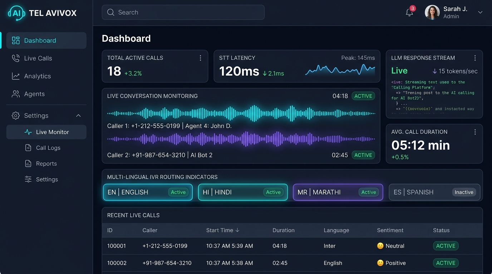

Production ArchitectureAI Voice Calling & Telephony Platform
Python • FastAPIProblem Solved: Automates enterprise customer calling with sub-second voice response, eliminating carrier credit waste via local mock adapters and handling real-time audio streams.
Enterprise telephony system integrating real-time Exotel AgentStream WebSockets, local Faster-Whisper speech-to-text, Ollama Gemma 3 LLM inference, Piper/Edge-TTS synthesis, VAD, and IVR language routing (English, Hindi, Marathi).